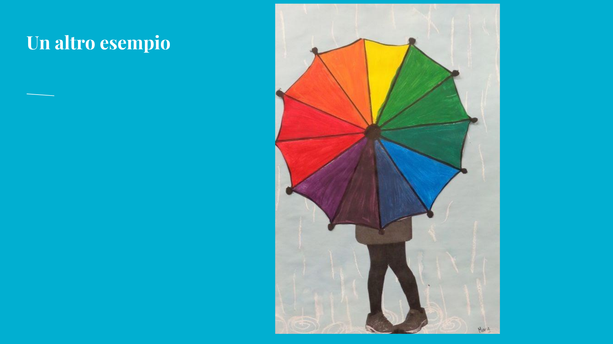

Si costruisce la sagoma dell’ombrello, suddividendola in settori regolari che accoglieranno i diversi colori.
Classi prime • teoria del colore • cerchio cromatico
L’ombrello dei colori
Un’attività per comprendere l’organizzazione dei colori attraverso una composizione figurativa: l’ombrello diventa una ruota cromatica, nella quale le diverse tonalità si dispongono in sequenza e permettono di osservare con immediatezza i passaggi tra colori caldi e freddi.

Presentazione dell’attività
Il colore diventa immagine
La presentazione mostra esempi e indicazioni operative per costruire un elaborato nel quale l’ombrello raccoglie e ordina i colori in una sequenza visiva chiara, trasformando la teoria del colore in un’immagine concreta.
Apri la presentazione su Canva ↗Fasi del lavoro
Osservare, ordinare, comporre
I colori vengono disposti seguendo un ordine coerente, mettendo in evidenza le relazioni tra tonalità vicine e il passaggio dai caldi ai freddi.
L’ombrello viene inserito in una scena figurativa semplice, così da trasformare l’esercizio sul colore in un elaborato personale e narrativo.